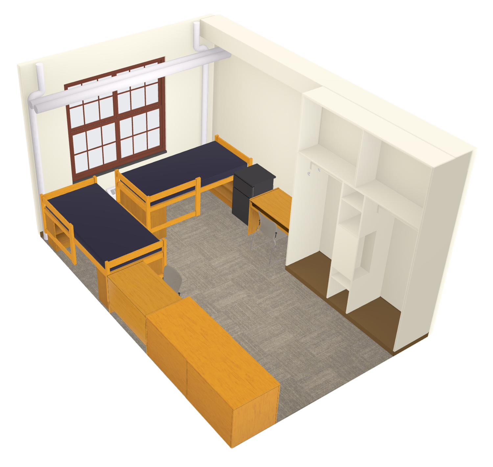
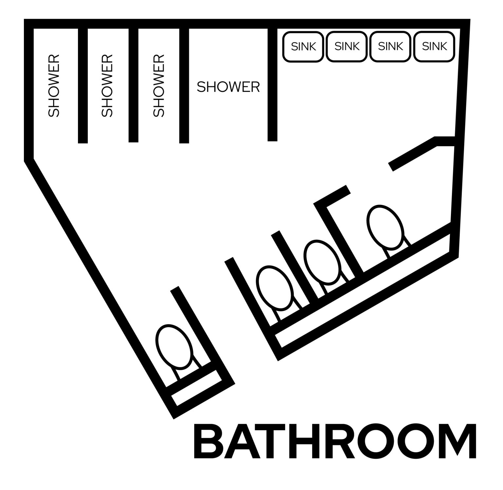
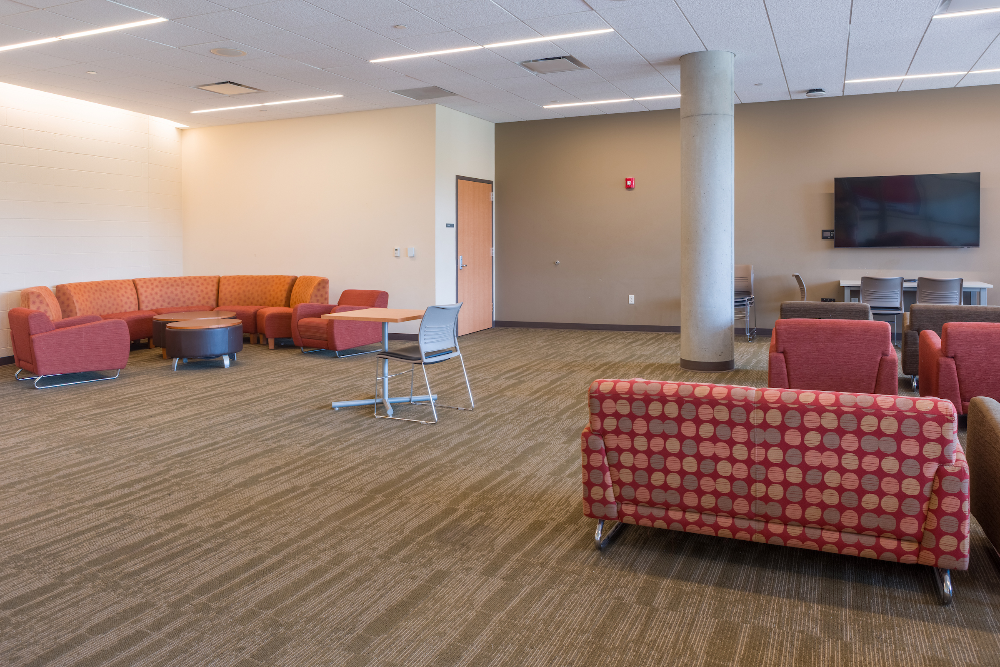

Explore different residence hall spaces and discover potential accessibility barriers and possible solutions.

Traditional Dorm Room
Explore everyday features of a typical residence hall room.

Dorm Bathroom & Shower
Explore how bathroom design can affect accessibility and independence.

Study Space
Explore how study environments can support or limit accessibility and learning.
Accessibility: What Could Be Better?
Accessibility is not just about meeting minimum requirements.
It is about creating living environments where all students
can participate, feel comfortable, and maintain independence.
Common Barriers in Residence Halls
Narrow pathways or crowded furniture arrangements
Desks, storage, and controls that are difficult to reach
Bathrooms and showers that are difficult to navigate
Insufficient lighting or overwhelming sensory environments
Lack of quiet or flexible study spaces
What Can Make a Difference?
Thoughtful furniture placement and clear pathways
Adjustable furniture and accessible storage
Inclusive bathroom and shower designs
Flexible lighting and sensory-friendly spaces
Listening to students with disabilities when designing housing
Think About It
What is one change you would make to improve accessibility
in your residence hall?